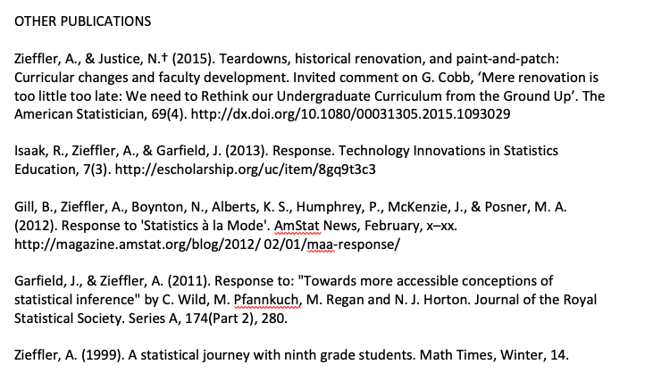
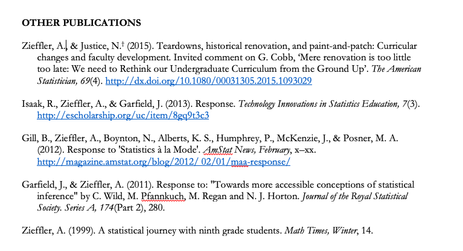

./assets/body-header.qmd
My colleague Joseph Rios and I helped organize a monthly reading and seminar series, QME and Friends Read, for interested graduate students in our program. In March, we hosted a seminar on the Curriculum Vitae, or CV. In preparing for that seminar, I looked through many faculty and student CVs. I also read many blog posts, and scholarly work about putting together a CV. Based on all of this and my own experiences and advice given to me, I decided to put together a post (maybe multiple posts) that includes some suggestions for compiling a CV.
Start Early; Update Often
Start putting together your CV as soon as you begin your graduate studies. Or, at the latest after your first term in graduate school. Update your CV after each term. In talking with faculty, many of my colleagues update their CV on a regular basis, for some this is monthly, for others weekly. The frequency will likely change as you progress through your academic career, and finding the right frequency is different for everyone. As such, the frequency is less important here than the regularity. Updating your CV is a scholarly habit that you will need to build. As you do more things, it is important to record them lest you forget and have to try and remember what you did three months ago.
Content and Sequencing
What should be included in your CV? A CV is different from a Resume. Curriculum Vitae literally means “course of life” and is meant to lay out the entirety of your academic life. This means that you will want to include information, among other things, on your:
- Education
- Academic Appointments
- Teaching Experience
- Academic Honors and Awards
- Publications
- Refereed Journal Articles
- Books
- Book Chapters
- Conference Proceedings
- Other Publications (e.g., Book reviews, blogs, non-refereed pieces)
- Grants and Fellowships
- Presentations
- Invited Presentations
- Workshops
- Professional Service
- Service to the Department, College, and University
- Service to the Profession (e.g., journals you review for)
- Service to the Community
When you initially put your CV together, some of these categories may be combined. For example, you may not have any invited presentations/talks, so you might include a single heading of “Presentations”. Later in your career, as you accumulate invited talks, you may choose to categorize those entries under a separate sub-heading of “Invited Presentations”.
The sequencing of these headings varies, although typically “Education” and “Academic Appointments” are the first two things listed in the CV. After that, you might use the sequence of headings as an indication of importance. For example, since I am in a teaching-oriented position I include “Teaching Experience”” and “Teaching Honors and Awards” before “Publications” and “Presentations”. If I were in a traditional tenure track position, I might reverse that. (Note that if you take a tenure-track position, many universities have a template for your CV that they want you to adhere to, including the sequence of categories.)
General Formatting/Typography
Make your CV look good. It is the first impression other academics have of you as a professional if they have not met you in person. Consider the same set of publications in the figures below. The first figure below shows those publications written using the default font in Word (Calibri; ugh) and very little formatting.

Now, the same publications have been written using Bembo Standard, a readable serifed font. They have also been formatted and the links have been colored.

Font matters. Formatting matters.
Some Tips for Different Sections
Here I lay out some advice for different sections of the CV. These are not hard-and-fast rules, but are based on advice given to me and things I have picked up from reviewing many CVs (for annual student reviews, job candidates, etc.) over the years.
Education
This is essentially a list of your degrees. List them from most recent to least recent. Give the year of completion, the institution and department for each degree. For example mine looks like this:
EDUCATION
2006 Ph.D., University of Minnesota. Quantitative Methods in Education, Department of Educational Psychology
1998 B.S., Saint Cloud State University. Mathematics Education
If you are a Ph.D. student, you may also provide your thesis advisor (and also the thesis title if you are ABD). For example
EDUCATION
2020 (Anticipated) Ph.D., University of Minnesota. Quantitative Methods in Education, Department of Educational Psychology
Thesis: A Longitudinal Investigation of the Development of College Students’ Reasoning About Bivariate Data
Thesis Advisor: Joan Garfield
1998 B.S., Saint Cloud State University. Mathematics Education
Publications and Presentations
For any of the categories where you are including bibliographic entries, use the style that your profession uses to format these. For example, in Educational Psychology we use APA. So all of my publications and presentations are formatted using the APA style. Within each category, it is also helpful if you:
- Order the entries from most recent to least recent.
- Bold your name.
- Index each entry with a count. Make the oldest entry 1 and count forward in time. This has the advantage that you can easily find out how many entries you have by looking at the most recent, and also that you don’t have to re-number every time you add a new entry. (You will be amazed at how often you need to provide the counts of these things.)
- If you have authored a publication with your students, indicate that. I include a super-scripted dagger next to a students name.
Here for example is how I have listed my “Other Publications”.
OTHER PUBLICATIONS
[5] Zieffler, A., & Justice, N.† (2015). Teardowns, historical renovation, and paint-and-patch: Curricular changes and faculty development. Invited comment on G. Cobb, ‘Mere renovation is too little too late: We need to Rethink our Undergraduate Curriculum from the Ground Up’. The American Statistician, 69(4). http://dx.doi.org/10.1080/00031305.2015.1093029
[4] Isaak, R., Zieffler, A., & Garfield, J. (2013). Response. Technology Innovations in Statistics Education, 7(3). http://escholarship.org/uc/item/8gq9t3c3
[3] Gill, B., Zieffler, A., Boynton, N., Alberts, K. S., Humphrey, P., McKenzie, J., & Posner, M. A. (2012). Response to ‘Statistics à la Mode’. AmStat News, February, x–xx. http://magazine.amstat.org/blog/2012/ 02/01/maa-response/
[2] Garfield, J., & Zieffler, A. (2011). Response to: “Towards more accessible conceptions of statistical inference” by C. Wild, M. Pfannkuch, M. Regan and N. J. Horton. Journal of the Royal Statistical Society. Series A, 174(Part 2), 280.
[1] Zieffler, A. (1999). A statistical journey with ninth grade students. Math Times, Winter, 14.